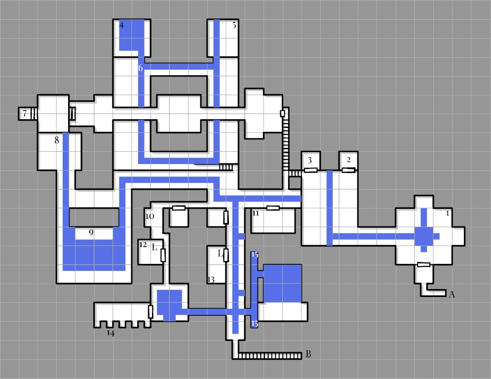
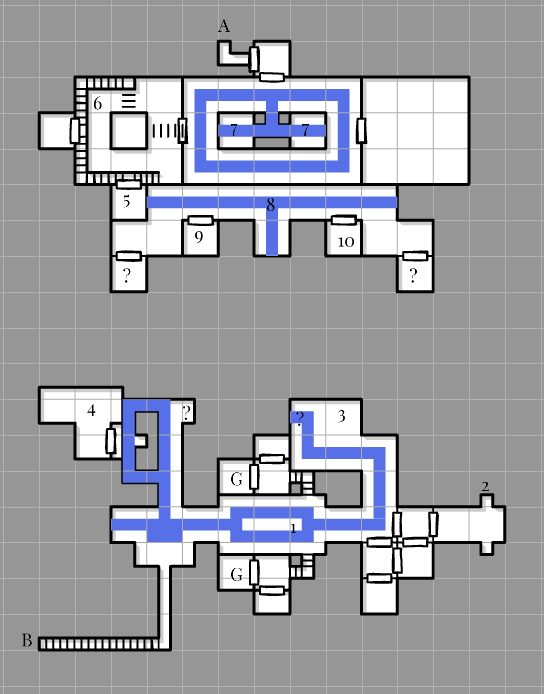

Blind Midden
Blind Midden is a dungeon just off Ali'Vorith, the starting zone for the Deep Elf race.
Added to EA in patch 0.30.2.0 (Sep 25: "Initial zone and spawning"); still marked as in progress in 0.30.2.1.
Map


Named mobs
| Named | Lvl | Race / class | Where | Known loot (hover) |
|---|---|---|---|---|
| Percy the Purse | 7-15 | Goblin | Give Smuggler's shopping list to Blurgh the Blind | Percy's Prison Purse, Percy's Prison Protection, Percy's IOU |
| Gorgeous | 7 | Slime Cube | Top floor | Undigested Underworld Bow, Hood of the Harried Huntsman, Dingy Drape of the Desperate Delver |
| Flavic the Fisher | 7 | Deep Elf | Top floor | Flavic's Filleting Falchion (common), Gutter's Gloves (uncommon), Bracers of the Bottom-Feeder (rare) |
| Mucky Morgurah | 7 | Deep Elf | Top floor | Snitch-Seeking Shaft Shooter, Vestment of the Vile Vigilante |
| Forager Davra | 7 | Deep Elf | Top floor | Claim-Jumper's Shiv, Davra's Lucky Find |
| Sethrine the Unblinking | 7 | Deep Elf | Top floor | Sethrine's Coat of Supple Strength, Setherine's Skinny Leggings, Vile Veil of the Villain |
| Mother Gummer | 12 | Slime Cube | (Presumed) Top floor, in the watery hallways where the gelmothers spawn | Acid-Washed Skinsuit |
| Underboss Vekrizin | 12 | Deep Elf | Top floor | Sash of House Unheard, Underboss Bracers, Mace of Dark Aspiration |
| Cedrius the Cutter | 12 | Deep Elf | Top floor | Stone-Scarred Shoulderpads, Quarryman's Earring, Stonecutter's Shroud |
| Blacksmith Jerictus | 12 | Deep Elf | Top floor, forge | Forge-Scorched Drape, The Blacksmith's Prototype, Gorget of the Reluctant Weaponsmith |
| Wikket Two-Wands | 12 | Deep Gnome | Top floor, prisons | Wikket's Warmask, Wikket's Wand Belt, Wikket's Third Wand |
| Reviver Vlarek | 12 | Deep Elf | Top floor, in the room with the sentient sewage. | Vlarek's Second Wind, Shiv of the Revivifier |
| Enthraller Gnorah | 15 | Deep Gnome | Basement, main entrance. First room on the right | Stolen Mask of the Enthralled, Genorah's Staff of Persuasion, Pendent of Pacification, Corpse of Enthraller Gnorah |
| Flashfreeze Fraegra | 15 | Deep Elf | Basement, main entrance. Dungeons area right after Enthraller Gnorah | Cold-Hearted Cord, Fraegra's Cold Snap Cap, Ward of the Frozen Circle |
| Biomass | 15 | Earth Elemental | Basement, main entrance. Left turn at dungeons area where Flashfreeze Fraegra is | Undissolved Buckler, Reabsorbed Ring, Corpse of Biomass |
| Knuttoc Grobbins | 15 | Deep Gnome | - | |
| Dakkin the Diabolical | 15? | Deep Gnome | - | |
| Gurm the Half-Woken | 15 | Ogre | - | |
| Elixa the Experimentalist | 15 | Deep Gnome | - | Steadying Wristguards of the Experimentalist |
| Gelmother Jiggol | 15 | Slime Cube | Basement, back entrance. Straight ahead of the back entrance room. | Brood-mother's Gel Band, Acid-Etched Focus of the Brood Mother |
| Pragrok the Pickaxe | 15 | Ogre | Basement, back entrance. Take a right out of back entrance room, first room on right. | Pragrok's Charm of Relentless Strikes |
| Forager Frandrah | 15 | Human | Basement, back entrance. Take a right out of back entrance room, first room on right. | Frandrah's Helm of the Harvest, Forager's Footwear, Harvester's Band |
| Ferg the Filthy | 15 | Goblin | Basement, back entrance. Hallway that connects Red Hands Ellison and Andrew the Framed | Ferg's Camouflaged Breastplate, Ferg's Unwashed Leggings, Corpse of Ferg the Filthy |
| Sarveth the Unheard | 15-16 | Deep Elf | - | |
| King Jekom the Ancient | 16 | Ghost | - | Jekom's War Helm, Jekom's Royal Signet, Belt of the Forgotten Kingdom |
Mobs & NPCs (camps by level)
Rows with a level are huntable camps; rows without are usually town NPCs or not yet documented.
| Name | Lvl | Race | Class | Where | Notes |
|---|---|---|---|---|---|
| a calmed cleanser | 3-4 | Slime | - | - | |
| a mournful outcast | 3-4 | Deep Elf | - | - | |
| a muttering detainee | 3-4 | Deep Elf | - | - | |
| a shackled brawler | 3-4 | Deep Elf | - | - | |
| a sludge shifter | 3-4 | Deep Elf | - | - | |
| a starving spearfisher | 3-4 | Deep Elf | - | - | |
| a sullen outcast | 3-4 | Deep Elf | - | - | |
| sentient sewage | 3-4 | Slime | - | - | |
| a Unheard observer | 6-7 | Deep Elf | - | - | |
| a captured trespasser | 6-7 | Deep Gnome | - | - | |
| a complicit conjurer | 6-7 | Deep Elf | Elementalist | - | |
| a dirty dissolver | 6-7 | Slime | - | - | |
| a faithless cleric | 6-7 | Deep Elf | Cleric | - | |
| a filth forager | 6-7 | Deep Elf | - | - | |
| a hopeful pledge | 6-7 | Deep Elf | - | - | |
| a houseless hacker | 6-7 | Deep Elf | - | - | |
| a hungry harpooner | 6-7 | Deep Elf | - | - | |
| a sneering lifer | 6-7 | Deep Elf | - | - | |
| a soiled salvager | 6-7 | Deep Elf | - | - | |
| a studious prisoner | 6-7 | Deep Gnome | - | - | |
| a treacherous trainee | 6-7 | Deep Elf | - | - | |
| a whispering confessor | 6-7 | Deep Elf | Cleric | - | |
| an aspiring assassin | 6-7 | Deep Elf | Rogue | - | |
| an infected inmate | 6-7 | Deep Elf | - | - | |
| an intellectual exile | 6-7 | Deep Elf | Wizard | - | |
| a captured trespasser | 10-11 | Deep Elf | - | - | |
| a convicted bookworm | 10-11 | Deep Elf | Enchanter | - | |
| a humiliated rulebreaker | 10-11 | Deep Elf | - | - | |
| a nurtured jelly | 10-11 | Slime | - | - | |
| a pleading prospect | 10-11 | Deep Elf | - | ||
| a pleading prospect | 10-11 | Deep Elf | - | - | |
| a soothing gelmother | 10-11 | Slime | - | - | |
| an Unheard bounty hunter | 10-11 | Deep Elf | - | ||
| an Unheard recruiter | 10-11 | Deep Elf | - | - | |
| an enforcing eye | 10-11 | Evil Eye | Enchanter | - | |
| a trusted treasurer | 11-12 | Deep Elf | Enchanter | - | |
| a dosed dredger | 12-13 | Deep Elf | - | - | |
| a rabid rat | 12-13 | Rat | - | - | |
| an Unheard bounty hunter | 12-13 | Deep Elf | - | - | |
| a sedated laborer | 13 | Elemental | - | - | |
| an Unheard hand | 13 | Deep Elf | - | - | |
| a forgotten foreigner | 15-16 | Goblin | - | - | |
| a spirit guide | 15-16 | Goblin | - | - | |
| a subjugated ancestor | 15-16 | Ghost | - | - | |
| a traversed forefather | 15-16 | Ghost | - | - | |
| a wandering watcher | 15 | Evil Eye | - | - | |
| an ancestral patriarch | 16-18 | Ogre | - | - | |
| a glaring guard | 18-19 | Evil Eye | - | - | |
| Andrew the Framed | >20 | Human | - | Basement, back entrance. Around corner and through hall in a room by himself, opposite Red Hands Ellison | Quest NPC? |
| Red Hands Ellison | >20 | Human | - | Basement, back entrance. Around corner and through hall in a room by himself, opposite Andrew the Framed | Quest NPC? |
| Blurgh the Blind | - | Goblin | - | Top floor, secret area up ladder by Underboss Vekrizin and Cedrius the Cutter | Quest NPC? |
| Custodian Merique | - | Skull | - | Top floor, main entrance | Quest NPC? |
| Herald Casteius | - | Skull | - | Top floor, main entrance | Quest NPC? |
| Kalessa Velgarrith | - | Deep Elf | - | Top floor, after main entrance room on right | Quest NPC? Merchant |
| Nibs Mudknuckle | - | Deep Gnome | - | Top floor, after main entrance room on left | Quest NPC? Merchant |
| Receptionist Naleth'ra | - | Skeleton | - | Top floor, main entrance | Quest NPC |
| Undertaker Gargnaw | - | Skull | - | Top floor, main entrance | Quest NPC? |
| a glaring guard | - | Evil Eye | - | - |
Quests
| Quest | Reward | Giver | Min lvl |
|---|---|---|---|
| Mark of Merit | Blind Midden Mark of Merit | Receptionist Naleth'ra | 1 |
Gear that drops here
| Slot | Item | Key stats (wiki) | How to get | Lvl | Classes |
|---|---|---|---|---|---|
| Wrist | Bracers of the Bottom-Feeder | AC 3, INT +3, HP +5 | Named drop: Flavic the Fisher (lvl 7) — Blind Midden, Top floor | 7 | All classes |
| Primary | Claim-Jumper's Shiv | DMG 6 / DLY 26, STA +1, INT +3 | Named drop: Forager Davra (lvl 7) — Blind Midden, Top floor | 7 | ARC BRD BST ELE ENC FTR INQ NEC RNG ROG SHD SHM WIZ |
| Chest | Dingy Drape of the Desperate Delver | AC 5, INT +2, HP +5 | Named drop: Gorgeous (lvl 7) — Blind Midden, Top floor | 7 | ELE ENC NEC WIZ |
| Primary | Flavic's Filleting Falchion | DMG 7 / DLY 35, STR +2, HP +5 | Named drop: Flavic the Fisher (lvl 7) — Blind Midden, Top floor | 7 | ARC BRD BST FTR INQ PAL RNG ROG SHD SPB WIZ |
| Hands | Gutter's Gloves | AC 5, STR +2, AGI +1 | Named drop: Flavic the Fisher (lvl 7) — Blind Midden, Top floor | 7 | ARC BRD BST CLR DRU FTR INQ MNK PAL RNG ROG SHD SHM SPB |
| Head | Hood of the Harried Huntsman | AC 5, STR +2, DEX +1 | Named drop: Gorgeous (lvl 7) — Blind Midden, Top floor | 7 | ARC BRD BST CLR DRU FTR INQ MNK PAL RNG ROG SHD SHM |
| Primary, Secondary | Percy's Prison Protection | DMG 6 / DLY 24, AGI +3, DEX +3, HP +10, SV Poison +5, Effect: Percy's Poison(Chance On Hit. Level 15) | Named drop: Percy the Purse (lvl 7-15) — Blind Midden, Give Smuggler's shopping list to Blurgh the Blind | 7 | ARC BRD BST FTR INQ PAL RNG ROG SHD SPB WIZ |
| Legs | Setherine's Skinny Leggings | AC 3, INT +2, CHA +2 | Named drop: Sethrine the Unblinking (lvl 7) — Blind Midden, Top floor | 7 | All classes |
| Chest | Sethrine's Coat of Supple Strength | AC 6, STR +2, STA +1 | Named drop: Sethrine the Unblinking (lvl 7) — Blind Midden, Top floor | 7 | ARC BRD BST CLR DRU FTR INQ MNK PAL RNG ROG SHD SHM SPB |
| Range | Snitch-Seeking Shaft Shooter | DMG 11 / DLY 44, STR +2, DEX +1, HP +5 | Named drop: Mucky Morgurah (lvl 7) — Blind Midden, Top floor | 7 | ARC BST FTR INQ PAL RNG ROG SHD WIZ |
| Range | Undigested Underworld Bow | DMG 14 / DLY 46, STR +3, STA +1, HP +5 | Named drop: Gorgeous (lvl 7) — Blind Midden, Top floor | 7 | ARC BST FTR INQ PAL RNG ROG SHD WIZ |
| Chest | Vestment of the Vile Vigilante | AC 5, INT +2, HP +5 | Named drop: Mucky Morgurah (lvl 7) — Blind Midden, Top floor | 7 | ELE ENC NEC WIZ |
| Bag, Belt | Percy's Prison Purse | no stats listed on wiki | Named drop: Percy the Purse (lvl 7-15) — Blind Midden, Give Smuggler's shopping list to Blurgh the Blind | 7 | class unconfirmed |
| Chest | Acid-Washed Skinsuit | AC 8, STA +1, WIS +3 | Named drop: Mother Gummer (lvl 12) — Blind Midden, (Presumed) Top floor, in the watery hallways where the gelmothers spawn | 12 | ARC BRD BST CLR DRU FTR INQ MNK PAL RNG ROG SHD SHM SPB |
| Back | Forge-Scorched Drape | AC 3, STA +2, WIS +1, Mana +5 | Named drop: Blacksmith Jerictus (lvl 12) — Blind Midden, Top floor, forge | 12 | BST CLR DRU PAL RNG SHM |
| Neck | Gorget of the Reluctant Weaponsmith | STR +2, STA +2, DEX +1 | Named drop: Blacksmith Jerictus (lvl 12) — Blind Midden, Top floor, forge | 12 | ARC BRD BST FTR INQ MNK PAL RNG ROG SHD SPB |
| Primary | Mace of Dark Aspiration | DMG 8 / DLY 35, STA +2, WIS +2 | Named drop: Underboss Vekrizin (lvl 12) — Blind Midden, Top floor | 12 | BRD BST CLR DRU FTR INQ MNK PAL RNG ROG SHD SHM SPB |
| Waist | Sash of House Unheard | AC 3, STA +3, CHA +2 | Named drop: Underboss Vekrizin (lvl 12) — Blind Midden, Top floor | 12 | All classes |
| Primary | Shiv of the Revivifier | DMG 6 / DLY 25, STA +2, INT +2 | Named drop: Reviver Vlarek (lvl 12) — Blind Midden, Top floor, in the room with the sentient sewage. | 12 | ARC BRD BST ELE ENC FTR INQ NEC RNG ROG SHD SHM SPB WIZ |
| Primary | The Blacksmith's Prototype | DMG 16 / DLY 54, STR +4, STA +1, DEX +2, HP +5 | Named drop: Blacksmith Jerictus (lvl 12) — Blind Midden, Top floor, forge | 12 | ARC BRD BST FTR INQ PAL RNG SHD SPB |
| Wrist | Underboss Bracers | AC 5, STR +3, DEX +1, HP +5 | Named drop: Underboss Vekrizin (lvl 12) — Blind Midden, Top floor | 12 | ARC BRD BST CLR DRU FTR INQ MNK PAL RNG ROG SHD SHM SPB |
| Secondary | Vlarek's Second Wind | AC 11, STR +3, HP +5 | Named drop: Reviver Vlarek (lvl 12) — Blind Midden, Top floor, in the room with the sentient sewage. | 12 | FTR INQ PAL SHD |
| Primary | Wikket's Third Wand | DMG 8 / DLY 35, STR +2, HP +10 | Named drop: Wikket Two-Wands (lvl 12) — Blind Midden, Top floor, prisons | 12 | ARC BRD BST FTR INQ PAL RNG ROG SHD SPB WIZ |
| Waist | Wikket's Wand Belt | AC 3, STA +2, INT +1, Mana +10 | Named drop: Wikket Two-Wands (lvl 12) — Blind Midden, Top floor, prisons | 12 | ELE ENC INQ NEC SHD SPB WIZ |
| Face | Wikket's Warmask | AC 3, STR +2, AGI +1, DEX +1 | Named drop: Wikket Two-Wands (lvl 12) — Blind Midden, Top floor, prisons | 12 | ARC BRD BST FTR INQ MNK PAL RNG ROG SHD SPB |
| Range | Acid-Etched Focus of the Brood Mother | INT +2, HP +10 | Named drop: Gelmother Jiggol (lvl 15) — Blind Midden, Basement, back entrance. Straight ahead of the back entrance room. | 15 | All classes |
| Waist | Brood-mother's Gel Band | AC 4, STA +2, WIS +2, HP +5 | Named drop: Gelmother Jiggol (lvl 15) — Blind Midden, Basement, back entrance. Straight ahead of the back entrance room. | 15 | BST CLR DRU PAL RNG SHM |
| Waist | Cold-Hearted Cord | AC 3, STA +2, CHA +2 | Named drop: Flashfreeze Fraegra (lvl 15) — Blind Midden, Basement, main entrance. Dungeons area right after Enthraller Gnorah | 15 | All classes |
| Chest | Ferg's Camouflaged Breastplate | AC 22, AGI +1, DEX +3, INT +1 | Named drop: Ferg the Filthy (lvl 15) — Blind Midden, Basement, back entrance. Hallway that connects Red Hands Ellison and Andrew the Framed | 15 | CLR FTR INQ PAL SHD |
| Legs | Ferg's Unwashed Leggings | AC 10, STA +2, WIS +2 | Named drop: Ferg the Filthy (lvl 15) — Blind Midden, Basement, back entrance. Hallway that connects Red Hands Ellison and Andrew the Framed | 15 | ARC BRD BST CLR DRU FTR INQ MNK PAL RNG ROG |
| Feet | Forager's Footwear | AC 9, STR +4, STA +2 | Named drop: Forager Frandrah (lvl 15) — Blind Midden, Basement, back entrance. Take a right out of back entrance room, first room on right. | 15 | ARC BRD BST CLR DRU FTR INQ MNK PAL RNG ROG SHD SHM SPB |
| Head | Fraegra's Cold Snap Cap | AC 8, STA +1, WIS +3 | Named drop: Flashfreeze Fraegra (lvl 15) — Blind Midden, Basement, main entrance. Dungeons area right after Enthraller Gnorah | 15 | ARC BRD BST CLR DRU FTR INQ MNK PAL RNG ROG SHD SHM SPB |
| Head | Frandrah's Helm of the Harvest | AC 15, STA +2, WIS +3 | Named drop: Forager Frandrah (lvl 15) — Blind Midden, Basement, back entrance. Take a right out of back entrance room, first room on right. | 15 | CLR FTR INQ PAL SHD |
| Primary | Genorah's Staff of Persuasion | DMG 15 / DLY 43, CHA +6, HP +15, Mana +5 | Named drop: Enthraller Gnorah (lvl 15) — Blind Midden, Basement, main entrance. First room on the right | 15 | All classes |
| Finger | Harvester's Band | STA +2, CHA +2 | Named drop: Forager Frandrah (lvl 15) — Blind Midden, Basement, back entrance. Take a right out of back entrance room, first room on right. | 15 | All classes |
| Neck | Pendent of Pacification | STA +2, INT +1, HP +5 | Named drop: Enthraller Gnorah (lvl 15) — Blind Midden, Basement, main entrance. First room on the right | 15 | ELE ENC INQ NEC SHD SPB WIZ |
| Neck | Pragrok's Charm of Relentless Strikes | STA +2, INT +1, Mana +5 | Named drop: Pragrok the Pickaxe (lvl 15) — Blind Midden, Basement, back entrance. Take a right out of back entrance room, first room on right. | 15 | ELE ENC INQ NEC SHD SPB WIZ |
| Finger | Reabsorbed Ring | STR +2, STA +1, DEX +1 | Named drop: Biomass (lvl 15) — Blind Midden, Basement, main entrance. Left turn at dungeons area where Flashfreeze Fraegra is | 15 | ARC BRD BST FTR INQ MNK PAL RNG ROG SHD SPB |
| Wrist | Steadying Wristguards of the Experimentalist | AC 6, STA +2, WIS +2 | Named drop: Elixa the Experimentalist (lvl 15) — Blind Midden, - | 15 | ARC BRD BST CLR DRU FTR INQ MNK PAL RNG ROG SHD SHM SPB |
| Face | Stolen Mask of the Enthralled | AC 3, STR +2, WIS +2 | Named drop: Enthraller Gnorah (lvl 15) — Blind Midden, Basement, main entrance. First room on the right | 15 | BST CLR DRU PAL RNG SHM |
| Secondary | Undissolved Buckler | AC 9, WIS +3, Mana +5 | Named drop: Biomass (lvl 15) — Blind Midden, Basement, main entrance. Left turn at dungeons area where Flashfreeze Fraegra is | 15 | BRD CLR DRU FTR INQ PAL RNG SHD SHM |
| Secondary | Ward of the Frozen Circle | AC 10, STA +1, INT +3, HP +5 | Named drop: Flashfreeze Fraegra (lvl 15) — Blind Midden, Basement, main entrance. Dungeons area right after Enthraller Gnorah | 15 | BRD CLR DRU FTR INQ PAL RNG SHD SHM |
| Ear | Quarryman's Earring | STA +2, WIS +1, HP +5, Mana +5 | Drop: Cedrus the Cutter (lvl unconfirmed) — Blind Midden | any / ? | BST CLR DRU PAL RNG SHM |
| Shoulders | Stone-Scarred Shoulderpads | AC 7, WIS +2, Mana +10 | Drop: Cedrus the Cutter (lvl unconfirmed) — Blind Midden | any / ? | ARC BRD BST CLR DRU FTR INQ MNK PAL RNG ROG SHD SHM SPB |
| Back | Stonecutter's Shroud | AC 3, STA +2, INT +2, HP +5, Mana +5 | Drop: Cedrus the Cutter (lvl unconfirmed) — Blind Midden | any / ? | ELE ENC INQ NEC SHD SPB WIZ |